Referencias utilizadas
Este trabajo se fundamenta en los siguientes tres artículos académicos:
Fundamentos del ajuste de curvas
Basado en Caceci & Cacheris (1984)
¿Qué es el ajuste de curvas?
El ajuste de curvas consiste en encontrar los parámetros de una función matemática que minimicen la diferencia entre los valores predichos por dicha función y los datos experimentales observados. Se busca que la curva teórica se aproxime lo más posible a los puntos de datos reales, generalmente minimizando la suma de los cuadrados de las diferencias (método de mínimos cuadrados).
El algoritmo Simplex (Nelder-Mead, 1965)
El algoritmo Simplex, propuesto originalmente por Nelder y Mead en 1965, es un método de optimización que no requiere calcular derivadas. Opera construyendo una figura geométrica llamada simplex: un triángulo en dos dimensiones o un tetraedro en tres dimensiones. En general, para n parámetros se utiliza un polígono de n + 1 vértices.
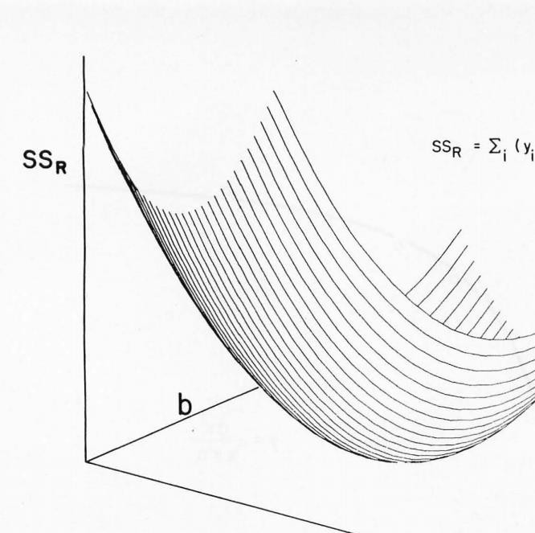
El algoritmo funciona evaluando la función objetivo en cada vértice del simplex y realizando movimientos geométricos para desplazar la figura hacia la región del espacio donde se encuentra el mínimo. Estos movimientos son cuatro:
Haz clic en cada movimiento para ver su explicación:
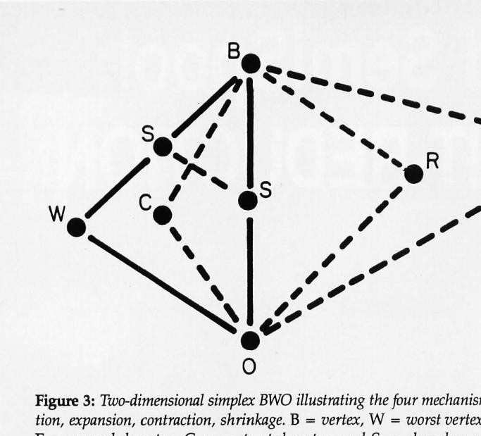
Ventajas del algoritmo Simplex
- No diverge: el algoritmo siempre converge hacia una solución, a diferencia de otros métodos que pueden oscilar o alejarse del óptimo.
- No requiere derivadas: no es necesario calcular gradientes ni jacobianas, lo que lo hace útil para funciones complejas o no diferenciables.
- Sin operaciones matriciales: su implementación es sencilla, ya que no necesita inversiones de matrices ni álgebra lineal avanzada.
Ejemplo clásico: ecuación de Michaelis-Menten
Caceci y Cacheris (1984) utilizaron como ejemplo la ecuación de Michaelis-Menten, que describe la velocidad de reacciones enzimáticas:
Donde a representa la velocidad máxima de la reacción y b es la constante de Michaelis (la concentración de sustrato a la cual la velocidad es la mitad de la máxima). El algoritmo Simplex se utiliza para encontrar los valores óptimos de a y b que mejor se ajustan a los datos experimentales.
Implementación en Pascal
Los autores publicaron un programa llamado "Simp", escrito en el lenguaje Pascal, que implementaba el algoritmo Simplex para ajustar curvas a datos experimentales. Este programa fue uno de los primeros en hacer accesible este método de optimización a investigadores y estudiantes con computadoras personales de la época.
Machine learning aplicado a la salud: enfermedad renal crónica
Basado en Tejada (2025)
Resumen del estudio
Objetivo: Desarrollar y optimizar modelos predictivos de machine learning para identificar pacientes con enfermedad renal crónica (ERC) a partir de datos clínicos y demográficos.
Metodología: Se utilizó un diseño analítico de corte transversal con datos de 400 pacientes. Se evaluaron cuatro algoritmos de aprendizaje automático y se aplicaron técnicas de ajuste de hiperparámetros y validación cruzada para optimizar el rendimiento de cada modelo.
Conclusión: Los modelos de Bosque Aleatorio y Árbol de Decisiones alcanzaron un desempeño superior, con exactitudes cercanas al 99%, demostrando el potencial del machine learning como herramienta de apoyo al diagnóstico clínico.
Comparación de modelos evaluados
Haz clic en cada fila para ver un resumen del modelo:
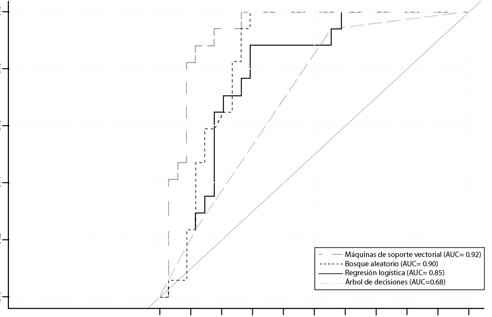
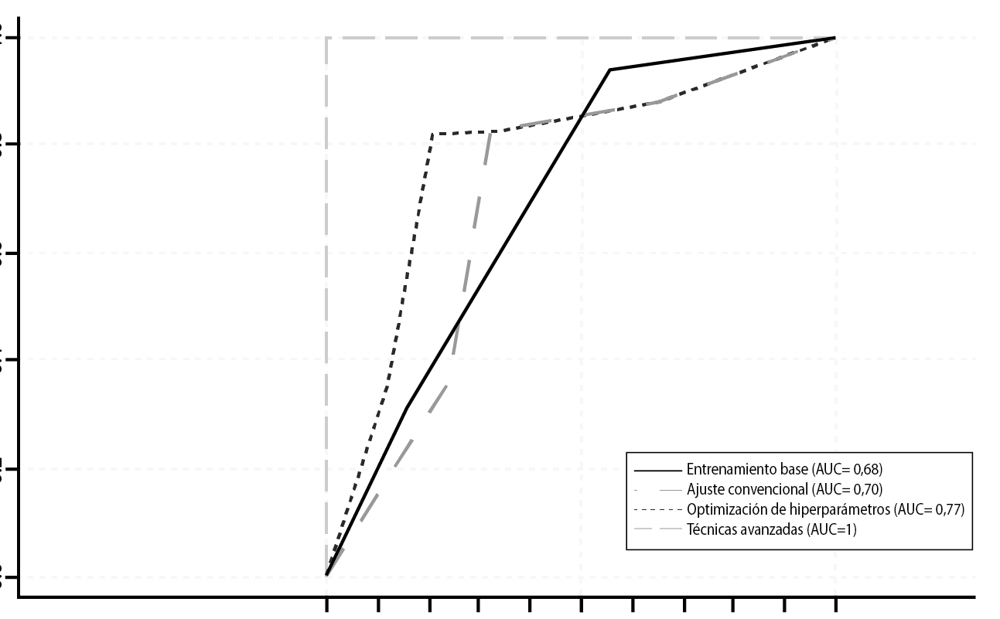
| Modelo | Exactitud | Sensibilidad | Especificidad | AUC |
|---|---|---|---|---|
| Regresión Logística | 96.25% | 95.83% | 96.88% | 0.99 |
| SVM | 98.13% | 97.50% | 98.44% | 0.99 |
| Bosque Aleatorio | 99.38% | 99.17% | 100% | 1.00 |
| Árbol de Decisiones | 99.38% | 99.17% | 100% | 0.99 |
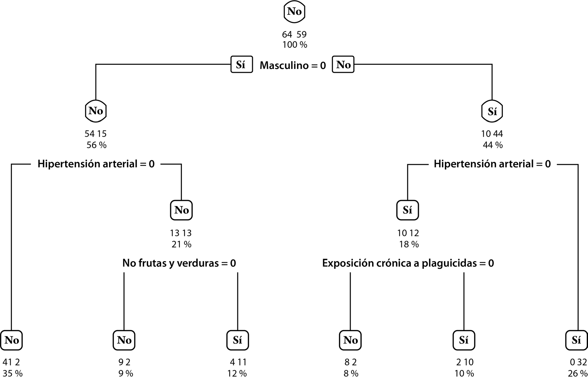
Factores determinantes identificados
El estudio identificó tres factores con mayor influencia en la predicción de la enfermedad renal crónica:
- Sexo masculino: los hombres presentaron mayor riesgo de desarrollar ERC.
- Hipertensión arterial: es un factor de riesgo reconocido que daña progresivamente los vasos sanguíneos renales.
- Exposición a plaguicidas: factor ambiental relevante, especialmente en poblaciones rurales y agrícolas.
Técnicas de optimización utilizadas
- Ajuste de hiperparámetros: se probaron distintas configuraciones de cada modelo (por ejemplo, número de árboles en Random Forest, tipo de kernel en SVM) para encontrar la combinación que maximiza el rendimiento.
- Validación cruzada: se dividió el conjunto de datos en múltiples subconjuntos para entrenar y evaluar el modelo de forma repetida, garantizando que los resultados sean generalizables y no dependan de una partición particular de los datos.
Predicción de resistencia antibiótica
Basado en Rodríguez Núñez (2025)
El problema de los microorganismos resistentes
Los microorganismos resistentes a antibióticos (MRA) representan una de las amenazas más graves para la salud pública mundial. En el contexto de las infecciones intraabdominales (IIA), la resistencia antibiótica dificulta el tratamiento empírico inicial: si el antibiótico elegido no es efectivo contra la bacteria causante, el paciente puede empeorar significativamente. Por ello, predecir la resistencia antes de tener los resultados del cultivo microbiológico podría salvar vidas.
Modelos evaluados
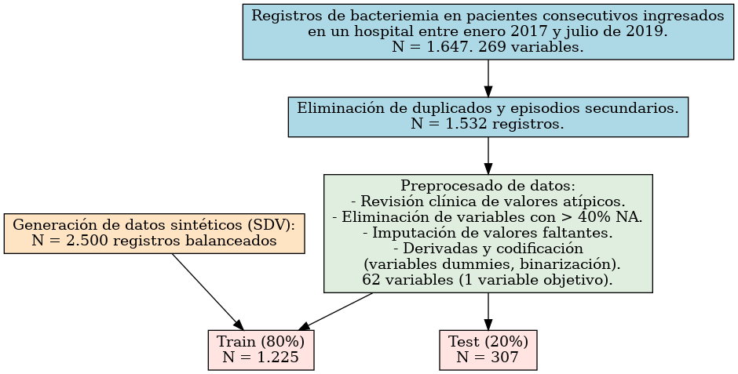
El estudio evaluó seis modelos de machine learning para predecir si el microorganismo causante de la infección sería resistente a los antibióticos habituales:
- Regresión Logística: modelo estadístico clásico como referencia.
- Random Forest: conjunto de árboles de decisión.
- XGBoost: algoritmo de gradient boosting optimizado.
- CatBoost: variante de boosting que maneja bien variables categóricas.
- Stacking 3c: modelo ensamblado que combina tres clasificadores base.
- Stacking 4c: modelo ensamblado que combina cuatro clasificadores base.
Resultados principales
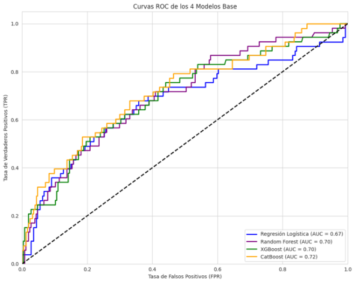
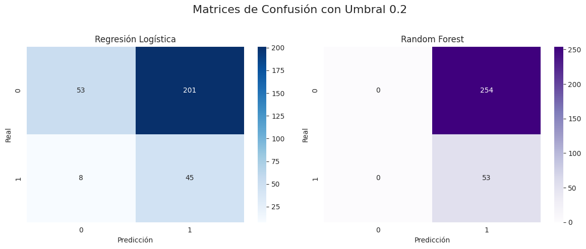
| Modelo | AUC | Recall | F1-Score | Precisión |
|---|---|---|---|---|
| Regresión Logística | 0.69 | 0.68 | 0.52 | 0.42 |
| Random Forest | 0.71 | 0.52 | 0.50 | 0.48 |
| XGBoost | 0.72 | 0.54 | 0.52 | 0.49 |
| CatBoost | 0.72 | 0.58 | 0.53 | 0.49 |
| Stacking 3c | 0.72 | 0.70 | 0.53 | 0.43 |
| Stacking 4c | 0.72 | 0.62 | 0.53 | 0.46 |
Variables predictoras clave
Los factores que más influyen en la predicción de resistencia antibiótica fueron:
- Uso previo de antibióticos: pacientes que recibieron antibióticos antes del ingreso tienen mayor probabilidad de albergar bacterias resistentes.
- Edad del paciente: los pacientes de mayor edad tienden a presentar infecciones con mayor resistencia.
- Días de ingreso hospitalario: a mayor estancia hospitalaria, mayor exposición a bacterias resistentes propias del ambiente hospitalario.
Conclusión clínica
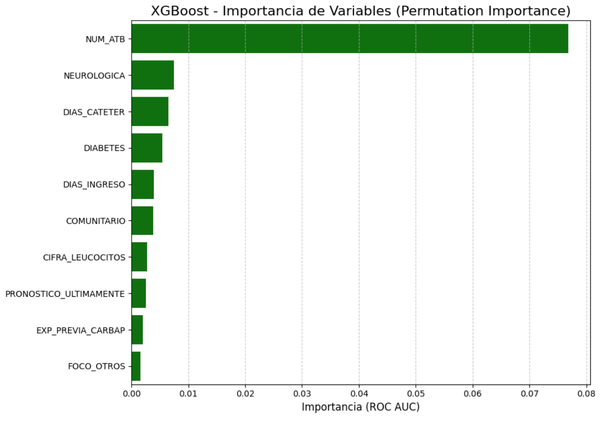
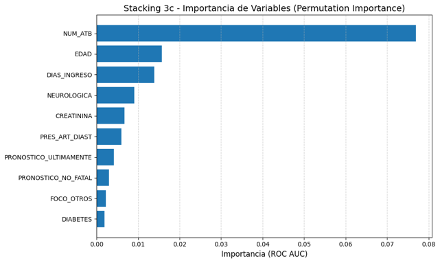
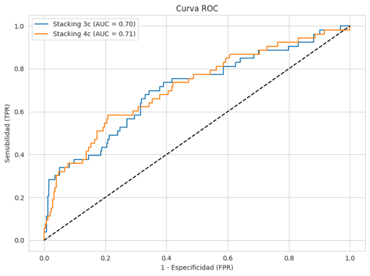
El modelo Stacking 3c fue seleccionado como el más adecuado para uso clínico, ya que prioriza la sensibilidad (recall = 0.70) sobre la precisión. En el contexto médico, es más importante detectar correctamente a los pacientes con bacterias resistentes (aunque se generen algunas falsas alarmas) que pasar por alto casos positivos, lo cual podría tener consecuencias graves para el paciente.
Pregunta de reflexión
¿Por qué en el contexto clínico de resistencia antibiótica se prefiere un modelo con alta sensibilidad (recall) aunque tenga menor precisión?
Conexiones y aplicaciones en sistemas computacionales
Del ajuste clásico al machine learning moderno
Los tres artículos analizados muestran una línea evolutiva clara: el ajuste de curvas clásico y el machine learning moderno comparten la misma base conceptual. Ambos buscan minimizar una función de error para encontrar los parámetros óptimos de un modelo. La diferencia principal radica en la complejidad de los modelos y la cantidad de datos que pueden procesar.
Se publica el método de optimización que permite encontrar mínimos de funciones sin calcular derivadas. Fundamento de muchos métodos numéricos posteriores.
Se democratiza el uso del Simplex al publicar un programa en Pascal accesible en computadoras personales. Se aplica al ajuste de la ecuación de Michaelis-Menten.
Se utilizan algoritmos avanzados (Random Forest, XGBoost, Stacking) con ajuste de hiperparámetros y validación cruzada para predecir enfermedades y resistencia antibiótica. La optimización sigue siendo el corazón de estos métodos.
Aplicaciones en sistemas computacionales
Las técnicas de ajuste de curvas y optimización tienen aplicaciones directas en los sistemas computacionales modernos:
- Optimización de hiperparámetros: al entrenar un modelo de ML, se deben ajustar parámetros como la tasa de aprendizaje, el número de árboles o la profundidad máxima. Esto es, en esencia, un problema de ajuste de curvas: encontrar los valores que minimizan el error de predicción.
- Funciones de pérdida: todos los algoritmos de machine learning buscan minimizar una función de pérdida (loss function), exactamente como el Simplex busca el mínimo de la suma de cuadrados. Los métodos modernos como el descenso de gradiente son análogos conceptuales del Simplex.
- Validación y evaluación: las métricas utilizadas (AUC, recall, F1-score, exactitud) son herramientas estándar en sistemas computacionales para evaluar la calidad del ajuste de un modelo a los datos.
- Ingeniería de software: la implementación de estos algoritmos requiere buenas prácticas de programación, manejo eficiente de datos y comprensión de las estructuras de datos subyacentes.
Reflexión final
El estudio del ajuste de curvas no es solo un tema histórico: es la base sobre la cual se construyen los sistemas de inteligencia artificial actuales. Comprender los principios del algoritmo Simplex ayuda a entender por qué los modelos modernos de ML necesitan optimización, cómo funcionan internamente los procesos de entrenamiento y por qué la selección cuidadosa de hiperparámetros es crucial para obtener buenos resultados. En un mundo cada vez más dependiente de los datos, estas habilidades son esenciales para cualquier profesional de los sistemas computacionales.